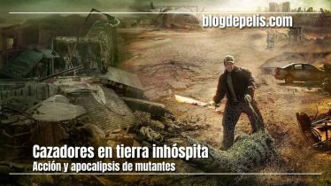
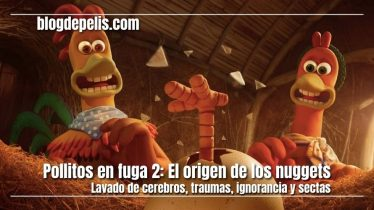

El planeta de los simios: nuevo reino (2024)
Pobres criaturas: La nominación más polémica de los Oscar

Cazadores en tierra inhóspita: Acción y apocalipsis de mutantes
Cásate con mi esposo: Venganza y nuevas oportunidades
Hazbin Hotel: La esperada serie de A24 y Amazon Prime
Mean Girls 2024: ¿Vale la pena la nueva adaptación?

Pollitos en fuga 2: El origen de los nuggets, traumas e ignorancia